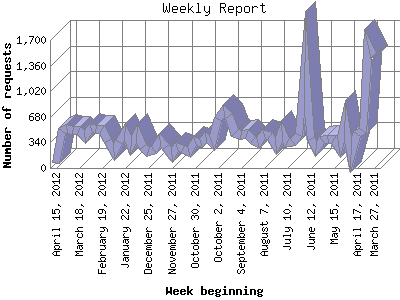

Analog 5.1
Analog 5.1 Report Magic 2.21
Report Magic 2.21The Weekly Report identifies the activity for each week within the report
time frame. Remember that one page hit can result in several server requests
as the images for each page are loaded.
Note: Depending on the
report time frame for this report the first and last week may not represent
a full seven day week, resulting in lower hits.

| Week beginning | Number of requests | Number of page requests | |
|---|---|---|---|
| 1. | March 27, 2011 | 1,477 | 64 |
| 2. | April 3, 2011 | 1,634 | 40 |
| 3. | April 10, 2011 | 488 | 30 |
| 4. | April 17, 2011 | 449 | 23 |
| 5. | April 24, 2011 | 167 | 19 |
| 6. | May 1, 2011 | 628 | 34 |
| 7. | May 8, 2011 | 277 | 22 |
| 8. | May 15, 2011 | 379 | 26 |
| 9. | May 22, 2011 | 381 | 28 |
| 10. | May 29, 2011 | 373 | 20 |
| 11. | June 5, 2011 | 247 | 20 |
| 12. | June 12, 2011 | 380 | 33 |
| 13. | June 19, 2011 | 1,404 | 76 |
| 14. | June 26, 2011 | 434 | 37 |
| 15. | July 3, 2011 | 341 | 37 |
| 16. | July 10, 2011 | 337 | 40 |
| 17. | July 17, 2011 | 497 | 42 |
| 18. | July 24, 2011 | 291 | 26 |
| 19. | July 31, 2011 | 430 | 32 |
| 20. | August 7, 2011 | 451 | 22 |
| 21. | August 14, 2011 | 338 | 32 |
| 22. | August 21, 2011 | 369 | 26 |
| 23. | August 28, 2011 | 450 | 28 |
| 24. | September 4, 2011 | 435 | 29 |
| 25. | September 11, 2011 | 468 | 39 |
| 26. | September 18, 2011 | 687 | 54 |
| 27. | September 25, 2011 | 761 | 167 |
| 28. | October 2, 2011 | 646 | 32 |
| 29. | October 9, 2011 | 332 | 34 |
| 30. | October 16, 2011 | 413 | 35 |
| 31. | October 23, 2011 | 329 | 31 |
| 32. | October 30, 2011 | 364 | 27 |
| 33. | November 6, 2011 | 213 | 40 |
| 34. | November 13, 2011 | 255 | 43 |
| 35. | November 20, 2011 | 280 | 50 |
| 36. | November 27, 2011 | 171 | 40 |
| 37. | December 4, 2011 | 273 | 52 |
| 38. | December 11, 2011 | 370 | 52 |
| 39. | December 18, 2011 | 237 | 48 |
| 40. | December 25, 2011 | 212 | 44 |
| 41. | January 1, 2012 | 273 | 31 |
| 42. | January 8, 2012 | 464 | 65 |
| 43. | January 15, 2012 | 295 | 47 |
| 44. | January 22, 2012 | 482 | 44 |
| 45. | January 29, 2012 | 347 | 50 |
| 46. | February 5, 2012 | 207 | 39 |
| 47. | February 12, 2012 | 361 | 49 |
| 48. | February 19, 2012 | 518 | 52 |
| 49. | February 26, 2012 | 518 | 40 |
| 50. | March 4, 2012 | 528 | 51 |
| 51. | March 11, 2012 | 410 | 59 |
| 52. | March 18, 2012 | 505 | 68 |
| 53. | March 25, 2012 | 504 | 51 |
| 54. | April 1, 2012 | 524 | 58 |
| 55. | April 8, 2012 | 496 | 72 |
| 56. | April 15, 2012 | 72 | 12 |
Most active week beginning September 25, 2011 : 167 pages sent. 1,634 requests handled.
Weekly average: 42 pages sent. 449 requests handled.
This report was generated on April 16, 2012 16:56.
Report time frame March 29, 2011 03:27 to April 16, 2012 22:03.
| Web statistics report produced by: | |
| Analog 5.1 | Report Magic 2.21 |